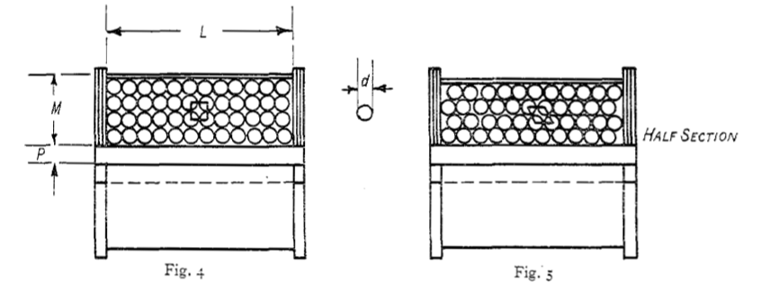

Solenoid Design: Winding Efficiency

Wind Space Efficiency
In 2-Dimensions
In the following, we discuss the wind's space efficiency of a coil given a specific area.
In Fig. 4 and 5 let $L$ be the length of the winding, $M$ be the depth of the coil, $P$ the radius of the core, and $d$ the diameter of the wire. If the turns of the wire lie strictly with respect to each other as shown in Fig. 4, each turn would occupy a sectional area $d^{2}$. In practice the turns lie more nearly as shown in Fig. 5, and each turn will then occupy a sectional area, say $kd^{2}$, where $k$ is a constant denoting the efficiency of making full use of area $ML$ while winding the wire in Fig. 5. Let the winding of Fig. 5 have $T$ turns, :
\begin{equation}
\text{Cross sectional area available for the turns} = ML = kd^{2}T
\end{equation}
\begin{equation}
\text{Cross sectional area occupied by the turns} = 0.785 d^{2}T
\end{equation}
\begin{equation}
\label{eq:space efficiency}
\text{Space efficiency of the winding} = \frac{\text{Area occupied by the turns}}{\text{Area available for the turns}}
\end{equation}
\begin{equation}
\label{eq:space efficiency simplified}
\text{Space efficiency of the winding} = \frac{0.785 d^{2} T}{M L} = 0.785k
\end{equation}
The number $0.785$ is the packing efficiency $P.E.$ of a square lattice of four circles (unit cell). Where $P.E = \pi r^{2} / (2r)^{2} = \pi / 4 = 0.7854$. For a theoretically efficient wind, the value of $k$ is approximately $0.9$ and efficiency about $0.87$.
In 3-Dimensions
Taking the the above even further and considering the efficiency in 3-dimensions, lets assume:
\begin{equation}
\text{Section area by a turn of wire} = A = \frac{\pi d^{2}}{4}
\end{equation}
\begin{equation}
\text{Section area occupied by a turn of wire} = k d^{2}
\end{equation}
\begin{equation}
\text{Number of turns} = T = \frac{LM}{kd^{2}}
\end{equation}
\begin{equation}
\begin{aligned}
\text{Volume of wire in winding } V & = \\
V & = \pi L \{ (M + P)^{2} - P^{2} \} \frac{\pi}{4k} \\
V & = \frac{\pi^{2}}{4 k} LM (M + 2P)
\end{aligned}
\end{equation}
Note: the volume of the wire in winding works out the full volume of the winding, regardless of wasted space. Then it is multiplied by the packing efficiency $P.E.$ previously worked out $\frac{\pi}{4}$, and also multipled by $\frac{1}{k}$ because as the winding efficiency $k$ increases the volume decreases; $k$ is inversely proportional to $V$. Now that we know the volume of the wire in the winding we can obtain the length.
\begin{equation}
\begin{aligned}
\text{Length of wire in winding} & = \frac{\text{Volume of wire in winding}}{\text{Section area by a turn of wire}} \\
& = \frac{\pi^{2}}{4k} LM(M + 2P)/\frac{\pi d^{2}}{4} \\
& = \frac{\pi}{k} \frac{LM(M + 2P)}{d^{2}} \\
& = \pi T (M + 2P)
\end{aligned}
\end{equation}
References
Higgs, P.J. The Design of Solenoid Electromagnets. (1925). J. Sci. Instrum. Vol.2 No.10.